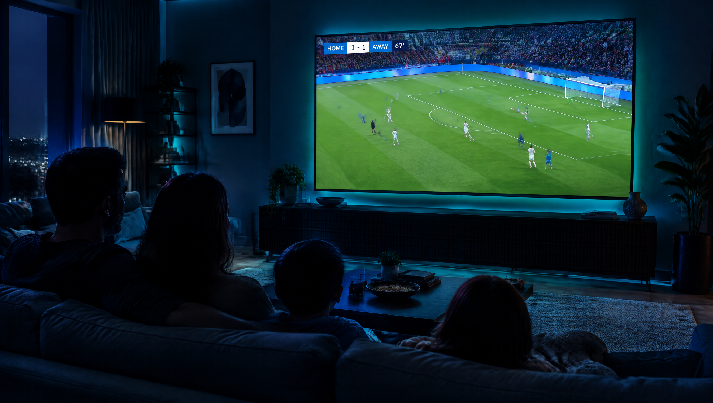
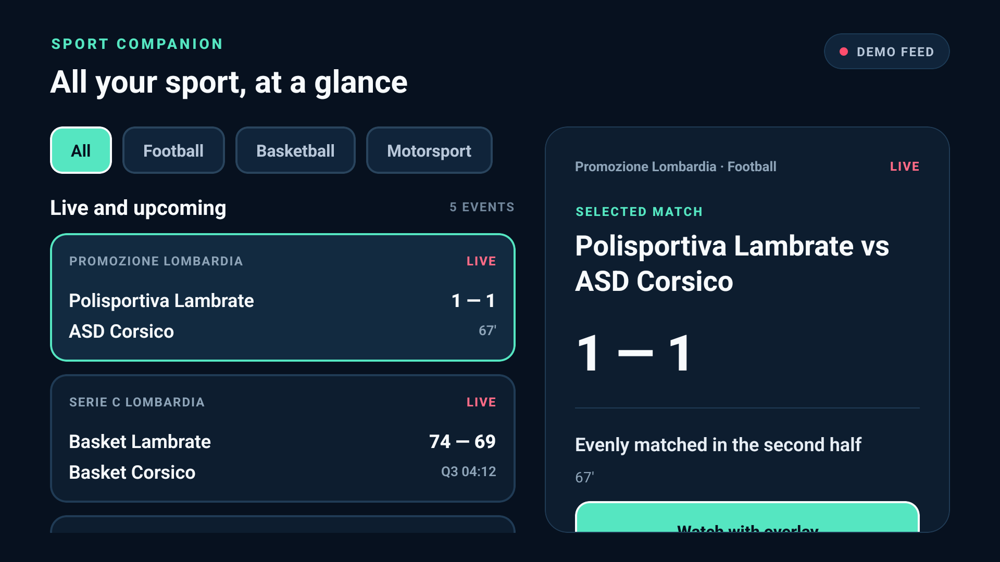
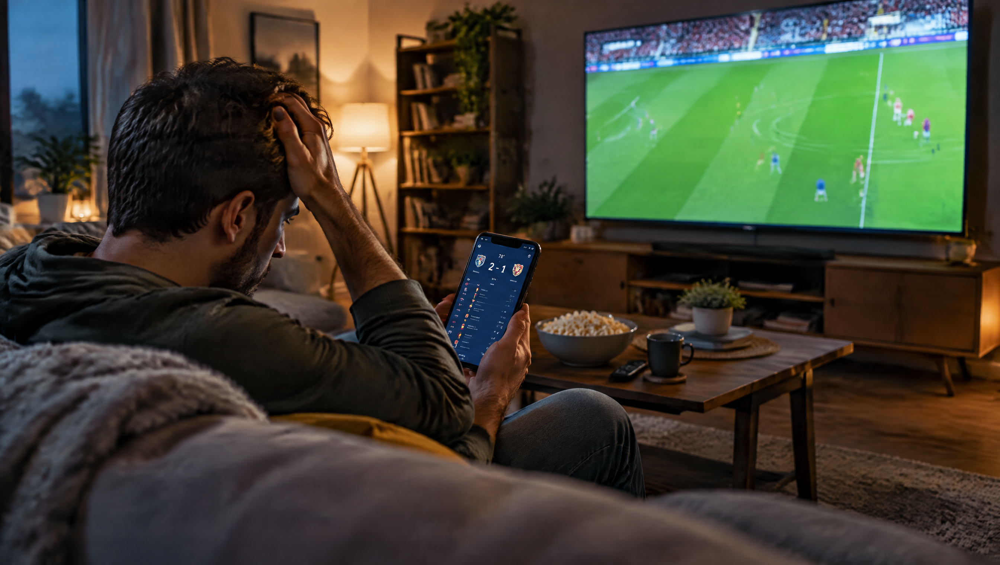
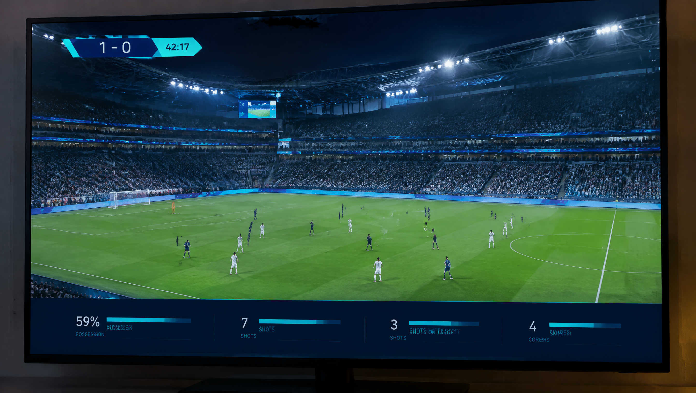
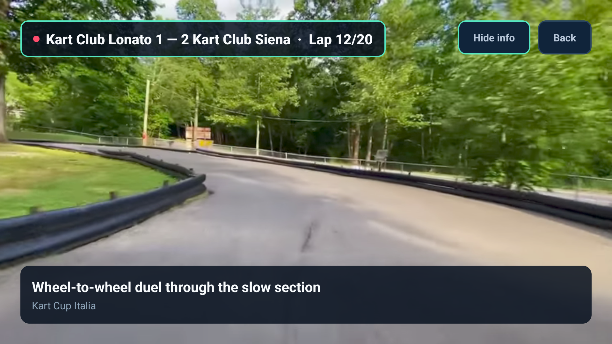
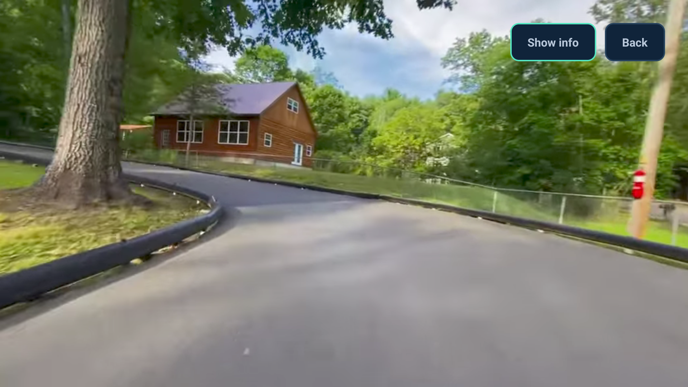
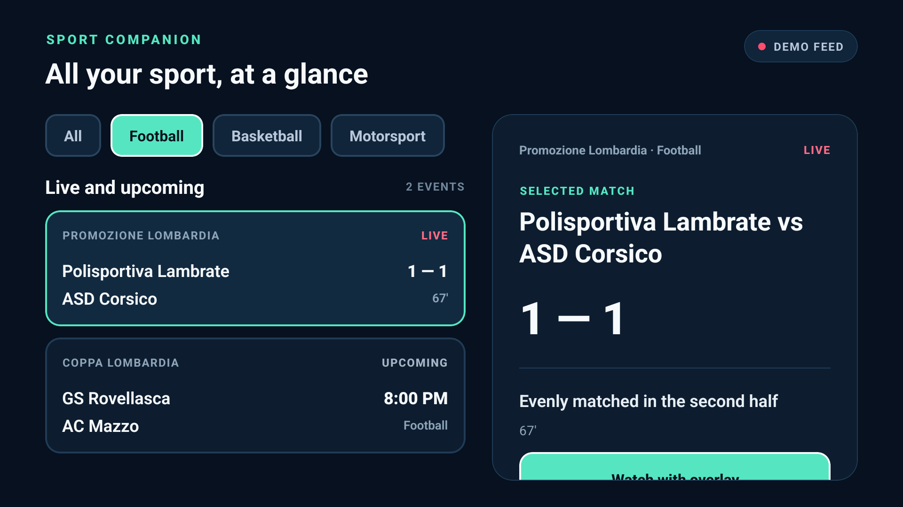
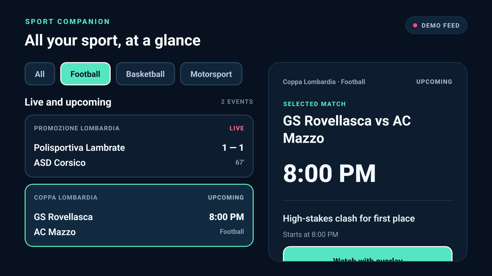
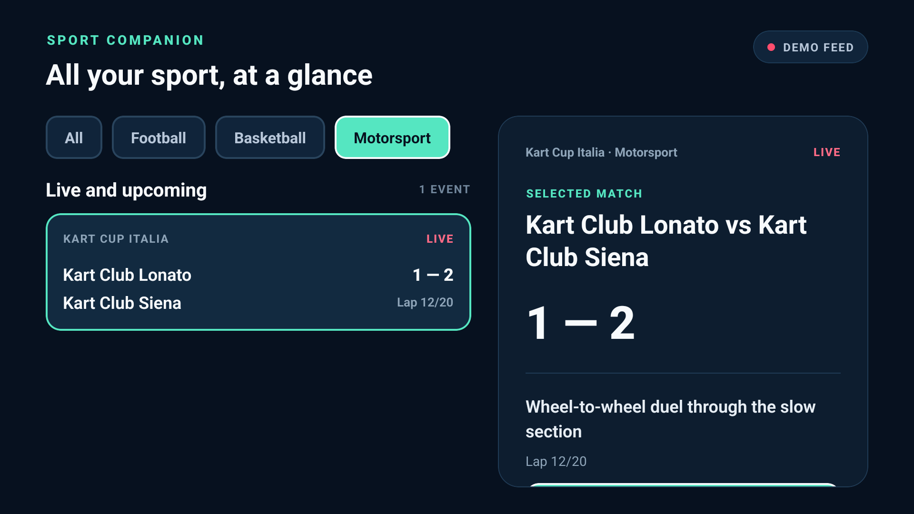

SLIDE 1 / 10Sport Overlay for Fire TV
A TV-first companion for live minor-league sport: the score on top of the match, the remote in hand. Football, basketball and motorsport (karting) on one screen, built for Fire OS with React Native TV. Repo: github.com/AliceMessi/amazon-sport-overlay

AI-generated concept render.

SLIDE 2 / 10The problem: minor-league fans get the worst apps
- Scores are buried in menus, built for phones and not for the couch.
- Video is region-locked or interrupted by ads.
- TV guides show one match at a time, with no glanceable live view across sports.

AI-generated concept render.
SLIDE 3 / 10Who feels it
- Families and casual fans: want one calm "what's on now" screen.
- Amateur clubs and local leagues: players, parents and supporters who follow several games on the same evening.
- Fire TV owners: a capable living-room device, underused for live companion experiences.
- Insight: a 10-foot UI must be readable from the couch and usable with five buttons.
SLIDE 4 / 10The solution: a calm, remote-driven companion
- One landscape screen: filters along the top, events on the left, the selected match on the right.
- Live badges, scores, period (67', Q3 04:12, Lap 12/20) and headline. Upcoming games show their kick-off time.
- Watch with overlay: the match plays fullscreen with the score bug and headline on top. Hide info gives clean video, Back returns.

AI-generated concept render.
SLIDE 5 / 10Watch with overlay
- One overlay engine for every sport: the score bug at the top left, a headline bar at the bottom, and Hide/Show info.
- Each sport plays its own freely licensed Wikimedia Commons clip (CC0 / CC BY-SA). There are no region blocks, no ads and no professional-league footage.
- Native playback uses
expo-video; the web build uses<video>with a fallback source.


SLIDE 6 / 10Filter, focus, detail
- Pick All / Football / Basketball / Motorsport. The list filters instantly and the first visible match is selected.
- D-pad focus is selection. Moving over a card updates the detail panel; OK opens the overlay.
- Every control is focusable, with a visible focus ring.


SLIDE 7 / 1010-foot and D-pad UX
- Landscape-first, large type and high contrast (
#07111F/#F7FAFC). The focus ring is always visible. - No keyboard or touch assumptions. A Leanback launcher entry and a 320×180 banner come from a custom Expo config plugin.
- The same code adapts to phones (a single column) and the web.

SLIDE 8 / 10Architecture
App.tsx -> LiveSportsScreen (dashboard) -> MatchOverlayScreen (video + overlay) src/state/sportsDashboard.ts pure reducer: filter, select, wrap-around src/data/demoMatches.ts 5 demo events, amateur clubs only src/screens/videoSource.ts one Commons clip per sport plugins/withFireTv.js Fire OS manifest: Leanback, banner, permissions
- Expo SDK 57, React 19, react-native-tvos 0.86 and TypeScript.
npm run verifyruns typecheck, ESLint and 32 Jest tests, all green.
SLIDE 9 / 10Why it fits the Fire TV track
- It targets sports, a listed priority category.
- It runs on Fire OS: a release APK, the Leanback launcher, D-pad navigation.
- Judging needs no setup: sideload the APK, or open the web preview. No keys or accounts.
- It is open source (MIT) with a public repo, built during the hackathon window.
SLIDE 10 / 10Roadmap
- Now: a demo feed, three sports, D-pad navigation and the video overlay.
- Next: live scores from local league feeds, an Alexa+ voice shortcut ("who's winning?"), favourites and kick-off reminders, and club-provided streams in place of the demo clips.
- Try it: APK on GitHub Releases · web preview · demo video